No “Exposed” class
Once attacked, a computer is infected immediately and can propagate the attack, so an E compartment adds nothing.
B.Tech Project · ABV-IIITM Gwalior · 2017
A seven-compartment epidemiological model of how malicious code spreads through a computer network — four classes for the targeted side, three for the attacker side — with firewall and antivirus coefficients that throttle transmission.
The project develops a compartmental model, built on infection-control mechanisms, to describe a distributed attack on targeted groups in a computer network. Two coupled sub-models capture the difference between the attacker class and the targeted class. Targeted nodes are split into Susceptible (S), Infected (I), Quarantined (Q) and Recovered (R); attacker nodes into Infected (I), Breaking-out (B) and Recovered (R).
Boundedness, feasibility of equilibria and their stability are established using cyber mass-action incidence. The basic reproduction number \(R_0\) decides the outcome: \(R_0 < 1\) gives a stable malicious-code-free state, while \(R_0 > 1\) gives a locally asymptotically stable endemic state. The effect of a media-coverage (firewall) coefficient \(m\) is studied, numerical simulation verifies the analytical results, and normalised forward sensitivity indices identify the parameters that matter most for \(R_0\).
Compartmental modelComputer networksLocal asymptotic stabilityBasic reproduction numberSensitivity analysisFirewall
A review of earlier SIR, SEIRS, SEIQRS and SLBS models surfaced five design flaws this model is built to avoid.
Once attacked, a computer is infected immediately and can propagate the attack, so an E compartment adds nothing.
Infection is split into latent (I) and breaking-out (B). Breaking-out machines degrade visibly and recover faster.
Defenders isolate infected nodes; attackers have no reason to, so Q exists only in the targeted class.
Recovered machines can be hit by new malware, so R flows back to S (target) and to I (attacker).
Ransomware-style attacks — carrier, burst, re-hack on recovery — fit the attacker I → B → R → I loop.
Targeted nodes follow an SIQR structure; attacker nodes follow an IBR loop. The two sides couple through the breaking-out class \(B_2\), which infects targeted susceptibles at a firewall-damped rate.
| Symbol | Class | Meaning |
|---|---|---|
| \(S_1\) | Target | Susceptible nodes |
| \(I_1\) | Target | Infected nodes |
| \(Q_1\) | Target | Quarantined nodes |
| \(R_1\) | Target | Recovered nodes |
| \(I_2\) | Attacker | Infected (latent) nodes |
| \(B_2\) | Attacker | Breaking-out nodes |
| \(R_2\) | Attacker | Recovered nodes |
Populations: \(N_1 = S_1+I_1+Q_1+R_1\) and \(N_2 = I_2+B_2+R_2\). Mass-action mixing and homogeneous spatial distribution are assumed.
Instead of bilinear \(\beta SI\) or standard \(\beta SI/N\) incidence, transmission is damped by a coverage factor:
Its minimum, \(\beta e^{-m}\), does not depend on population size — unlike the older form \(\beta e^{-mI}\), which pushes transmission to zero as \(I\) grows. Firewall vigilance alone cannot drive transmission below a threshold, so this form is the more realistic one.
| \(b,\ b_1\) | Recruitment rates of target and attacker classes |
| \(d_1,\ d_3\) | Natural death rates of target and attacker nodes |
| \(\beta_1\) | Contact rate, susceptible → infected (target) |
| \(\beta_2\) | Contact rate, breaking-out (attacker) → susceptible (target) |
| \(\gamma\) | Recovery rate of breaking-out nodes |
| \(\eta,\ \eta_1\) | Recovery rates of infected nodes |
| \(d_2,\ d_4\) | Death rates in infected target / attacker classes (infection + natural) |
| \(\lambda_0\) | Recovery rate of quarantined nodes |
| \(\delta\) | Rate infected → breaking-out (attacker) |
| \(\theta\) | Immunity loss, recovered → infected (attacker) |
| \(\alpha\) | Immunity loss, recovered → susceptible (target) |
| \(\mu\) | Rate infected → quarantined (target) |
| \(m_1,\ m_2\) | Infection-controlling coefficients (antivirus, firewall) |
Summing the target equations gives \(\dot N_1 \le b - dN_1\) with \(d=\min\{d_1,d_2\}\), so \(\limsup N_1 \le b/d\). The region
is positively invariant. The attacker side is bounded the same way by \(b_1/\min\{d_3,d_4\}\).
Setting all derivatives to zero gives two steady states:
The attacker sub-system was solved analytically in Mathematica; the target side numerically.
Next-generation method on \(x=(I_1,Q_1,I_2,B_2)\), with \(R_0=\rho(FV^{-1})\). Non-dimensional model at \(E_1\):
Dimensional model:
At \(E_1\) the Jacobian's eigenvalues include \(\beta_1-d_2-\eta-\mu\), \(-d_2-\lambda_0\), \(-1-\alpha\), and three roots of a cubic from the attacker block. When \(R_0<1\) all have negative real parts, so:
| Parameter | Set A | Set B | Parameter | Set C | Set D |
|---|---|---|---|---|---|
| non-dimensional | dimensional | ||||
| \(b\) | 7.5 | 7.5 | \(b\) | 1 | 75 |
| \(d_1\) | 0.003 | 0.003 | \(d_1\) | 0.3 | 0.3 |
| \(\beta_1\) | 0.001 | 0.01 | \(\tilde\beta_1\) | 0.5 | 2.5 |
| \(\beta_2\) | 0.006 | 0.30 | \(\tilde\beta_2\) | 0.6 | 0.6 |
| \(\mu\) | 0.003 | 0.003 | \(\tilde\mu\) | 0.3 | 0.3 |
| \(\lambda_0\) | 0.008 | 0.0008 | \(\tilde\lambda_0\) | 0.8 | 0.8 |
| \(d_4\) | 0.075 | 0.0075 | \(\tilde d_4\) | 10 | 2.5 |
| \(b_1\) | 7.5 | 7.5 | \(\tilde b_1\) | 75 | 75 |
| \(d_3\) | 0.02 | 0.02 | \(\tilde d_3\) | 2.0 | 2.0 |
| \(\eta\) | 0.004 | 0.0004 | \(\tilde\eta\) | 0.4 | 0.4 |
| \(\eta_1\) | 0.175 | 0.0175 | \(\tilde\eta_1\) | 17.5 | 7.5 |
| \(\alpha\) | 0.010 | 0.0005 | \(\tilde\alpha\) | 1.0 | 1.0 |
| \(d_2\) | 0.4 | 0.004 | \(\tilde d_2\) | 0.4 | 0.4 |
| \(\gamma\) | 0.0005 | 0.01 | \(\tilde\gamma\) | 0.75 | 0.75 |
| \(\delta\) | 0.009 | 0.027 | \(\tilde\delta\) | 1.9 | 0.9 |
| \(\theta\) | 0.10 | 0.20 | \(\tilde\theta\) | 10 | 10 |
| \(m_1\) | 2 | 2 | \(m_1\) | 6 | 2 |
| \(m_2\) | 3 | 2 | \(m_2\) | 6 | 2 |
| Feasible SS | E₁ | E₂ | Feasible SS | E₁ | E₂ |
| \(R_{01}\) | 0.0098 | 1.2500 | \(\tilde R_0\) | 0.4545 | 2.2727 |
| \(R_{02}\) | 0.0073 | 0.3846 | |||
Simulations were run in MATLAB with ode45 (Runge–Kutta–Fehlberg). Each plot shows node density over time for all seven classes; solid lines are targeted classes, dashed lines are attacker classes. Click any figure to enlarge.
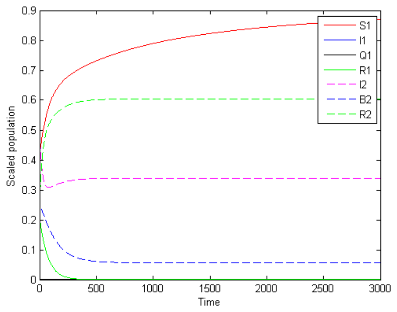
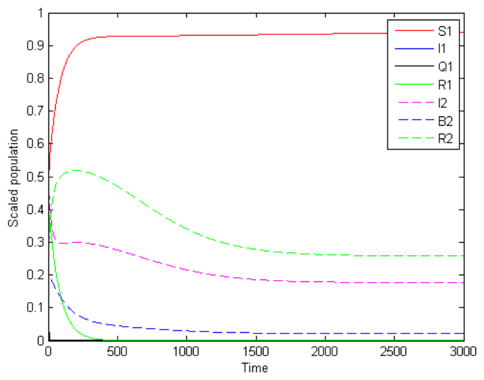
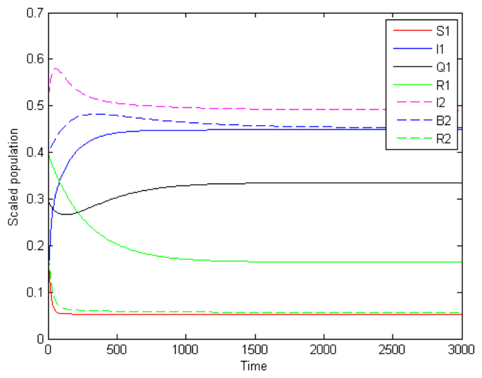
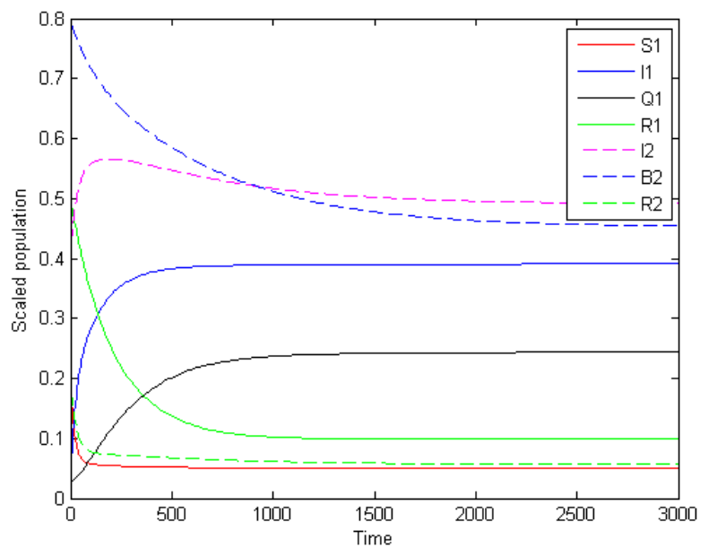
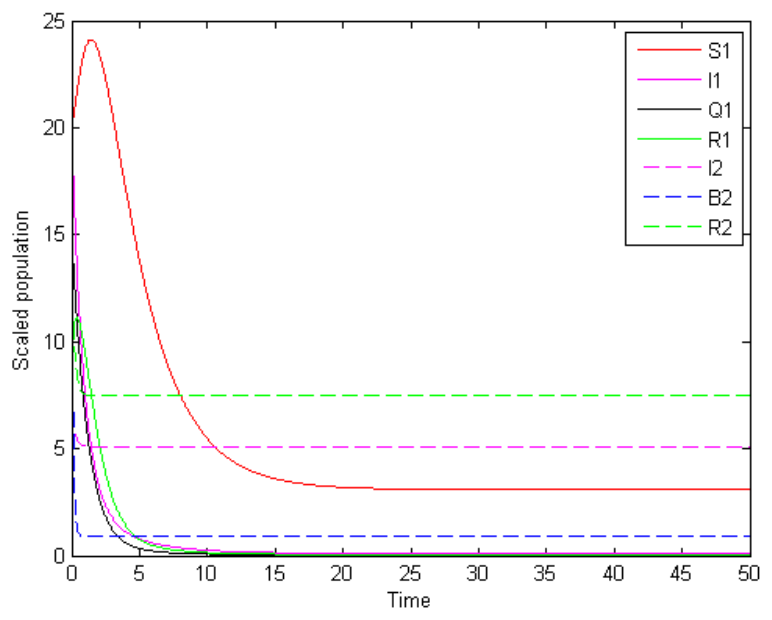
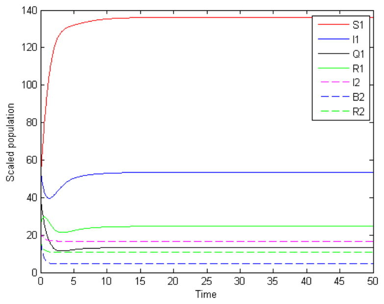
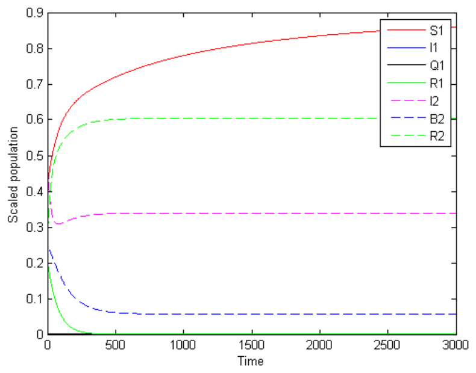
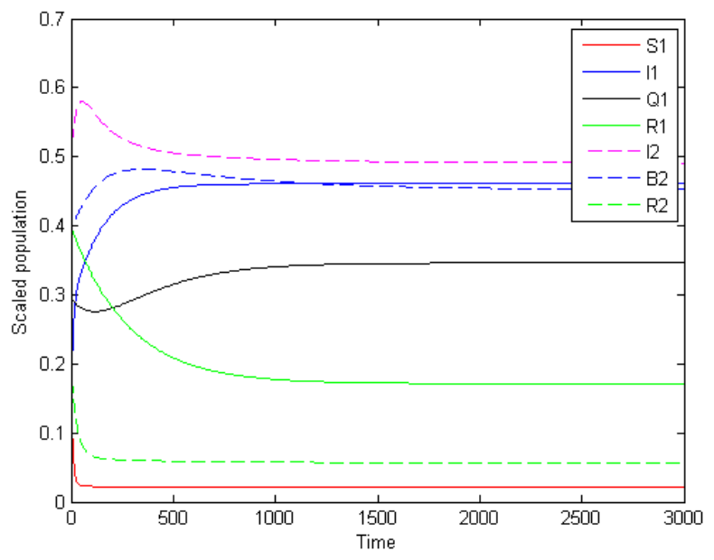
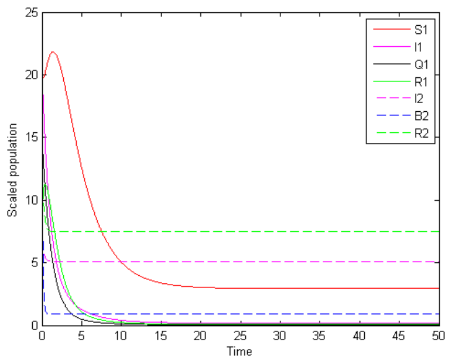
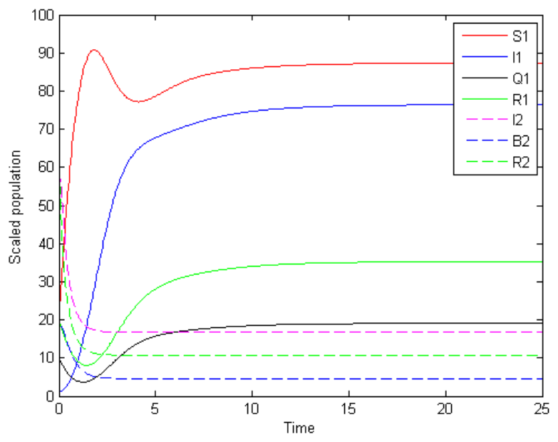
With \(m_1=m_2=0\), susceptible density falls and the infected population grows relative to the controlled runs. The qualitative behaviour — which equilibrium wins — is unchanged, because \(R_0\) does not depend on \(m_1\) or \(m_2\).
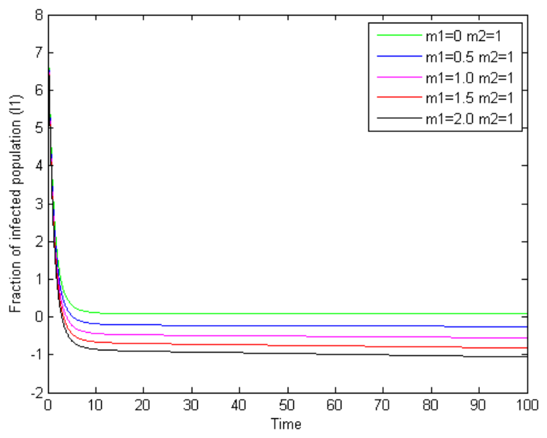
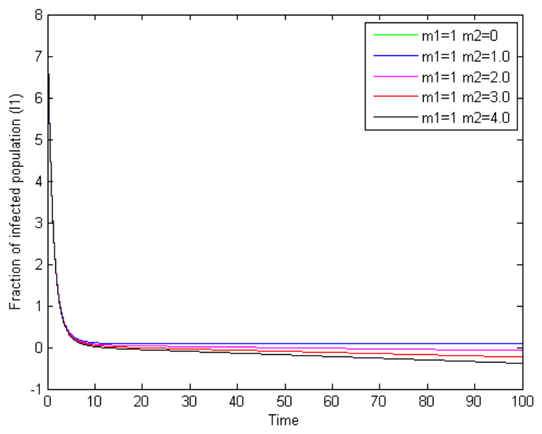
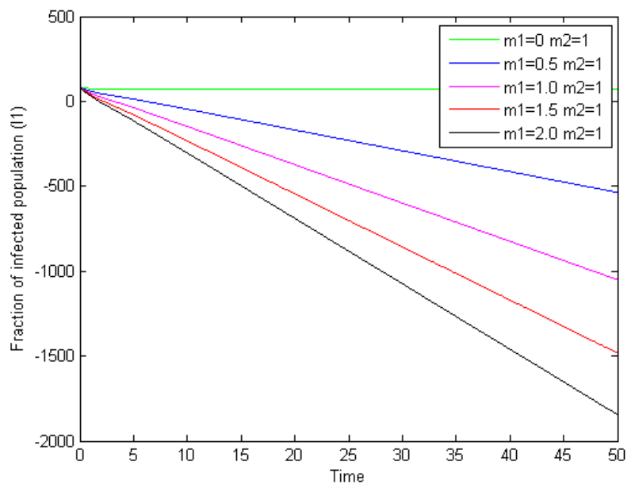
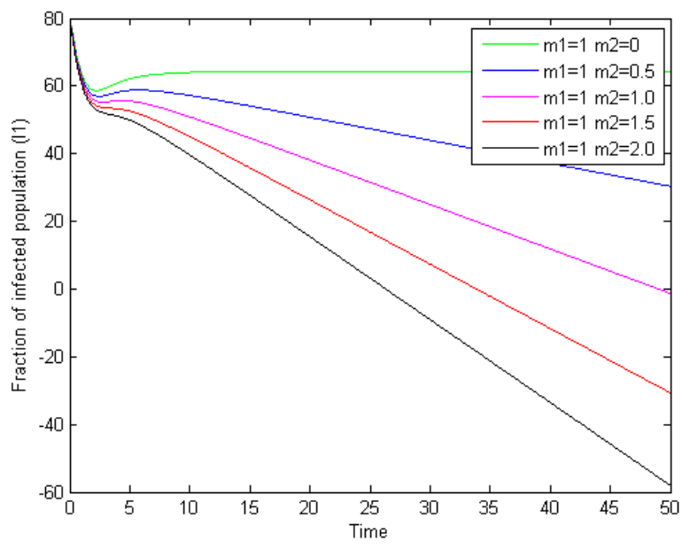
In both regimes, the infected fraction drops as the firewall and antivirus coefficients increase. The firewall limits damage by blocking unauthorised access; antivirus prevents, detects and removes malicious software.
The dimensional model, integrated in your browser with fourth-order Runge–Kutta. Start from Set C or Set D and move the sliders to see how \(\tilde R_0\) and the trajectories respond.
A firewall checks each connection against its rule base in order — IP address, port, domain, keywords — using rule priority, authenticated bypass, block and allow rules. The report defines the security coefficient from how files respond to those rules:
\(a+b-ab\) is the probability-style union of the two factors; a smaller union means a stronger firewall and a larger \(m\).
The normalised forward sensitivity index \(\Upsilon^{u}_{p} = \dfrac{\partial u}{\partial p}\cdot\dfrac{p}{u}\) gives the percentage change in \(u\) for a 1% change in \(p\). Parameters not listed have index 0.
| Reproduction number | Sensitive parameters |
|---|---|
| \(R_{01}\) | \(\beta_1,\ \mu,\ \eta\) |
| \(R_{02}\) | \(d_2,\ \lambda_0\) |
| \(\tilde R_0\) | \(\tilde\beta_1,\ \tilde d_2,\ \tilde\mu,\ \tilde\eta\) |
| Type of analysis | Bhargava, Palash, Soni, Dhar | Proposed |
|---|---|---|
| Total equilibrium states | 16 | 2 |
| Malicious-code-free equilibria | 4 | 1 |
| Endemic equilibria | 12 | 1 |
| Highly sensitive parameters | 2 – 4 | 0 |
| Moderately sensitive parameters | 3 – 5 | 2 – 4 |
.
├── Source Code/MATLAB
│ ├── Normalized.m # non-dimensional system (Sets A, B)
│ └── Duimensional.m # dimensional system (Sets C, D)
├── Source Code/Mathematica
│ ├── malicious free.nb # all 7 equations → equilibria
│ ├── attacker.nb # attacker side, solved analytically
│ ├── Numerical equation.nb # target side, solved numerically
│ └── senstivity *.nb # sensitivity indices
├── Final Report/ # LaTeX source + figures
├── Presentation/ # Beamer slides
└── Final Report.pdfTools: MATLAB 8.1 (R2013a), Wolfram Mathematica 11.1.1. Analysis uses RKF45, Jacobians and eigenvalues.
function Duimensional
tmax = 100;
initial = [0.2 0.2 0.02 0.1 0.1 0.1 0.1];
[t, y] = ode45(@simulation, [0 tmax], initial);
plot(t, y, 'LineWidth', 1.5);
legend('S1','I1','Q1','R1','I2','B2','R2');
% m1, m2: antivirus and firewall coefficients
% R = beta1/(d2+eta+mu) -> basic reproduction number
...
end@techreport{singh2017malicious,
title = {Analysis of Malicious Code Dynamics with Target
and Attacker Nodes Using Mathematical Model},
author = {Singh, Alok and Singh, Neha and Sharma, Saurabh},
institution = {ABV-Indian Institute of Information
Technology and Management, Gwalior},
type = {B.Tech. Project Report},
year = {2017}
}